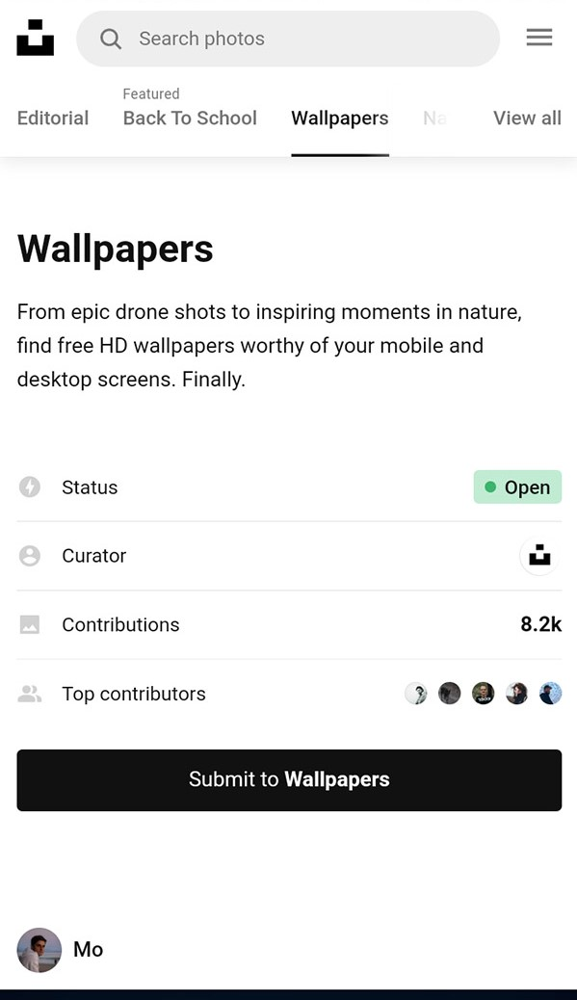

Design Principles
Alice Duren
HIERARCHY
Unsplash
https://unsplash.com/ Unsplash is a great place for getting stock images and other useful photos, but the way the first page is displayed in mobile shows a great example of hierarchy in web design. The firsts thing our eyes are drawn to are the bold "wallpapers" heading at the top, followed by the description and options for what kind of wallpaper shots there are. Due to our eyes naturally scrolling down the page, this resembles a classic use of hierarchy in typography for a webpage.
RULE OF THIRDS
Amazon
https://www.amazon.com/ref=nav_logo

Though the rule of thirds is a common principle of design, it can be hard to spot. In Amazon's case, the first place to notice it is on the home page, specifically in the recommended tabs. The way the pictures are spread is a rule of thirds layout, with the three pictures in the three columns that are seen in a rule of thirds grid. This is not only good design, but a great way to get the viewer browsing the site with familiar options already listed there.
AlLIGNMENT
Alignment is a very useful principle to show in design, and a great place it's shown is on the website Pinterest. This website is all about showcasing beautiful images and stunning photographs, and a great way to show that is through alignment. On mobile, the way the photos are aligned in columns and, despite changes in a photo's dimensions, maintains an aligned format and makes it a very clean and organzied browsing experience.